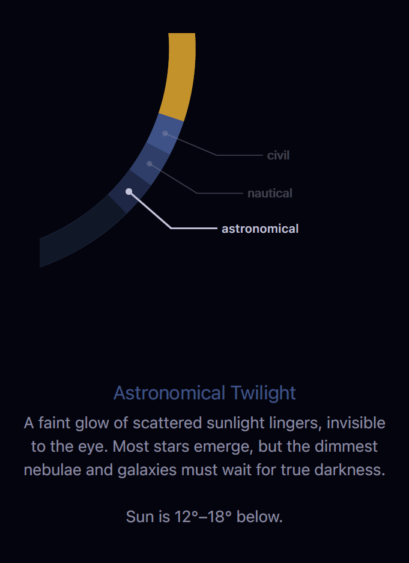
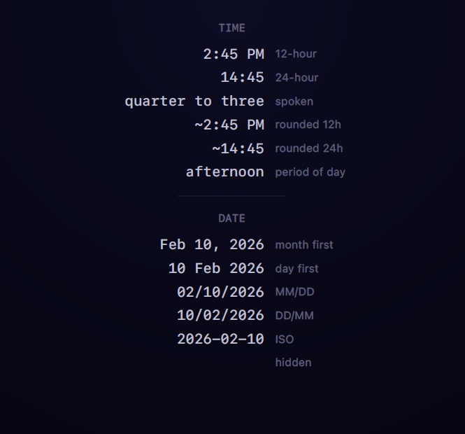

Answers to common questions, plus what's covered in the in-app guide.
Sloww uses your location to calculate sunrise, sunset, twilight, and moon times for where you are. Your location stays on your device and is never sent to a server. You can deny access and set a location manually instead.
Long-press the location label below the clock to open the location picker. Search for any city, enter exact coordinates, or switch back to device GPS. You can bookmark locations for quick switching.
The outer ring shows the sun's arc and daylight. Colored bands around it represent twilight stages and golden hour. Inside that, the moon ring shows when the moon is above the horizon. The two innermost rings track the lunar cycle and the seasons of the year. There's also an optional breath ring for guided breathing. The in-app guide covers each ring in detail.
Near the poles, the sun behaves differently — midnight sun, polar night, white nights, and perpetual twilight are all real phenomena. The clock adapts to show these accurately. The "Extreme Latitudes" section of the in-app guide explains each one.
Use the toggle buttons at the bottom of the clock. Each button cycles through states for its ring — tap to step through the options. Dots below each button show the current state.
A breathing guide at the center of the clock. Choose from four techniques: box breathing, coherent breathing, 4-7-8 relaxation, and extended exhale. Each visualized as a pulsing ring. Cycle through them with the wind icon on the toggle bar.
Long-press the time display to activate a scrub slider. Drag to move through the day and watch the clock update in real time. Tap the handle to switch between slow mode (minutes) and fast mode (hours to days).
Yes. Sloww offers Home Screen widgets in three sizes and five Lock Screen widgets showing sun, moon, and daylight data at a glance. Long-press your Home Screen, tap the + button, and search for Sloww.
Yes. Three purpose-built bedside widgets: a minimal clock dial, a countdown to the next light transition, and tonight's moon phase. Designed for distance legibility with automatic night mode support.
Yes. Try "Ask Sloww about today's shape," "Ask Sloww about stargazing," or "Check Sloww for golden hour." 17 voice intents with warm, contextual answers. All are also available as actions in the Shortcuts app.
Per-event vibrations and notifications for 9 celestial moments: sunrise, high noon, golden hour, sunset, civil twilight, moonrise, high moon, moonset, and full darkness. Choose Off, Vibration, or Both for each event. Set a global lead time or long-press any event for a custom one. Configure in Settings.
Three modes in the Appearance sheet: Off, Dark at Sunset, and Dark + Red. Dark at Sunset forces dark mode at civil twilight. Dark + Red adds a curated warm red palette at nautical twilight to preserve your dark-adapted eyes. Default: Dark at Sunset.
Settings Lock prevents accidental changes to your clock. Enable it in Settings with three modes: All Controls (locks ring toggles and format cycling), Formats Only (locks readout format cycling), or Off. Long-press any empty space on the clock to temporarily unlock. Tap Done or wait 30 seconds to lock again. Automatically disabled when VoiceOver is active.
No. There are no analytics, no crash reporters, no ad frameworks, and no network requests. Everything is computed and stored on your device. See the Privacy Policy for details.
Sloww includes a built-in guide with illustrated articles on every feature. Open it by tapping the guide icon in the app. Here's what it covers:


Still need help?
Reach out at support@hiiden.co and I'll get back to you as soon as I can.